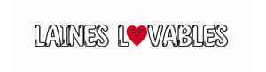

Trade Mark Journal No.2025/011 14 March 2025
UK00004168077 3 March 2025 (14,25,26,28)

- Class 14
- Brooches [jewellery]; Jewellery brooches; Brooches [jewelry]; Jewelry brooches; Brooches being jewelry; Decorative brooches [jewellery]; Gold plated brooches [jewellery]; Silver-plated earrings; Necklace charms; Lapel pins [jewellery]; Earrings; Enamelled jewellery; Pendants [jewellery]; Jewellery hat pins; Lapel pins [jewelry]; Gold earrings; Jewelry stickpins; Necklaces [jewellery]; Pins [jewellery]; Pins being jewellery; Decorative pins [jewellery]; Hat jewellery; Costume jewellery; Scarf clips being jewelry; Charms [jewellery]; Charms for jewellery; Jewellery charms; Wristlets [jewellery]; Pendants [jewelry]; Jewelry hatpins; Jewel pendants; Jewelry hat pins; Sterling silver jewellery; Ornaments [jewellery]; Bracelets [jewellery]; Pins [jewellery, jewelry (Am.)]; Bracelets made of embroidered textile [jewellery]; Jewellery; Pearls [jewellery, jewelry (Am.)]; Bracelet charms; Necklaces [jewelry]; Dress ornaments in the nature of jewellery; Pins being jewelry; Pins [jewelry]; Charms [jewellery, jewelry (Am.)]; Silver thread [jewellery, jewelry (Am.)]; Necklaces [jewellery, jewelry (Am.)]; Gold thread [jewellery, jewelry (Am.)]; Costume jewelry; Bracelets made of embroidered textile [jewelry]; Charms [jewelry]; Jewelry charms; Charms for jewelry; Hat jewelry; Bracelets [jewellery, jewelry (Am.)]; Jewellery in the form of beads; Bracelets [jewelry]; Pendants; Necklaces; Bangle bracelets; Jewelry; Shoe jewellery.
- Class 25
- Ladies wear; Slipper socks; Slippers; Leather slippers; Bath slippers; Knitted baby shoes; Footwear; Embroidered clothing; Sneakers [footwear]; Footwear [excluding orthopedic footwear]; Insoles for footwear; Parts of clothing, footwear and headgear; Uppers (Footwear -); Leisure footwear; Knitwear [clothing]; Golf footwear; Pumps [footwear]; Trainers [footwear]; Shoes for leisurewear; Flip-flops for use as footwear; Knitted clothing; Ready-to-wear clothing; Sports garments; Footwear for men; Pyjamas; Pajamas; Nightwear; Bed socks; Nighties; Nightshirts; Clothes; Long-sleeved shirts; Short-sleeved T-shirts.
- Class 26
- Embroidered badges; Embroidered emblems; Brooches for clothing; Embroidered patches; Embroidered patches for clothing; Silver embroidery for garments; Gold embroidery for garments; Brooches [clothing accessories]; Embroidery for garments; Embroidery; Silver embroidery; Gold embroidery; Embroidery laces; Fabric appliques [haberdashery]; Fabric appliques; Pins, other than jewellery; Beads other than for making jewelry [haberdashery]; Badges [buttons] (Ornamental novelty -); Ornamental novelty badges [buttons]; Pins, other than jewelry.
- Class 28
- Soft toys; Plush toys; Cuddly toys; Fluffy toys; Toys; Stuffed and plush toys; Stuffed plush toys; Squeezable squeaking toys; Stuffed toys; Stuffed bean-filled toys; Wooden toys; Toys for babies; Toys, games, and playthings; Toys and playthings for pets; Toys made of rubber; Squeeze toys; Bath toys; Toys for infants; Toy dolls; Stuffed animals [toys]; Pet toys; Dog toys; Toys for animals; Toys and playthings for pet animals; Toys for dogs; Toys, games and playthings for pet animals; Toys for pets; Toy bakeware and toy cookware; Stuffed toy animals.
Angi Hussey